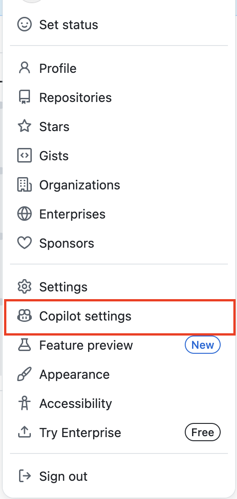
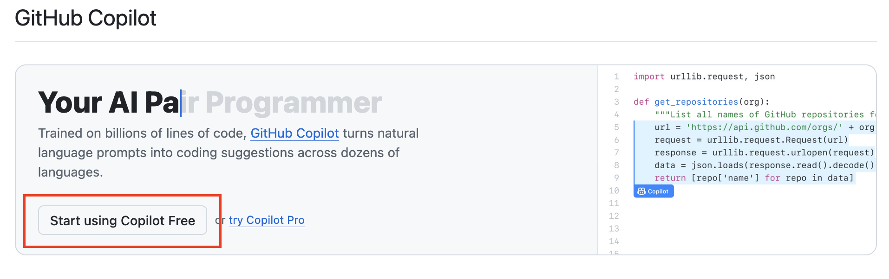

Use this page to install the two command-line AI tools required for Lab 11.
These tools change over time. This page was written from the current official installation docs, but if something here stops working, check the official docs linked at the bottom.
npm, Copilot CLI requires Node.js 22+
and Gemini CLI requires Node.js 20+.
The official cross-platform npm method is:
npm install -g @github/copilotAn alternative way for Windows is using winget:
winget install GitHub.CopilotAn alternative way for MacOS is using Homebrew:
brew install copilot-cliIf you are having trouble installing, go to Frequently Asked Questions.
Start Copilot CLI:
copilot
If copilot is not found after installation, close and
reopen your terminal, then try again.
On first launch, if you are not signed in, Copilot will not allow you to send messages. You will need to authenticate your GitHub account.
In your browser, open your GitHub account, or make one if you have not already.

If Copilot is already enabled on your account, it should look like this:
If it is not enabled yet, click Start using Copilot Free.

In your terminal with Copilot, run:
/loginWhen asked what account to log into, choose:
1. GitHub.comPress any key to open the browser and follow the authentication steps. Remember to paste the one-time code when prompted. After completing the login flow, you should now be able to send messages in Copilot CLI.
The standard cross-platform install method uses npm:
npm install -g @google/gemini-cliThe alternative method for MacOS is using Homebrew:
brew install gemini-cliIf you are having trouble installing, go to Frequently Asked Questions.
Start Gemini CLI:
geminiWhen prompted:
Once authentication succeeds, press R to restart Gemini. You
can now send messages.
If that happens, try using sudo for the install command, and if
needed, when launching the tool:
sudo npm install -g @github/copilot
sudo copilot
sudo npm install -g @google/gemini-cli
sudo geminiOnly do this if you actually hit a permissions error. On many systems it will not be necessary.
If the error mentions Node.js, you most likely need to install the correct version. On WSL/MacOS/Linux systems, try:
sudo apt remove -y nodejs npm
curl -fsSL https://deb.nodesource.com/setup_lts.x | sudo bash -
sudo apt install -y nodejsThen retry the CLI installation steps above.
copilotgeminiOnce you have the tools installed, these are some useful built-in commands to know.
/model: change which AI model Copilot uses for the current
session.
/allow-all: allow Copilot to use tools, files, and URLs
without asking every time.
/agent: browse and select available agents.
/usage: show session statistics, such as requests and
token usage.
/context: show how much context window space is currently
being used.
/auth: change or check how Gemini CLI is authenticated.
/tools: show what tools Gemini can currently use.
/stats: show session statistics such as token usage and
session duration.
/memory show: show the instruction context Gemini has
loaded from GEMINI.md files.
@filename: add a file directly into your prompt so Gemini
can read it.
Copilot and Gemini do not use exactly the same command names. If you
forget one, /help works well as a starting point in both
tools.